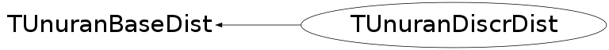

class TUnuranDiscrDist: public TUnuranBaseDist
TUnuranDiscrDist class for one dimensional discrete distribution. It is used by TUnuran to generate integer random numbers according to this distribution via TUnuran::SampleDiscr(). The class can be constructed from a one-dimensional function (TF1 pointer) representing the discrete distribution (probability mesh function) (for example a TF1("f","TMath::PoissonI(x,[0])") ) or from a vector of probability, used by passing an iterator specifying the begin and the end of the vector. In the latter case the domain of the distribution will be defined by the vector, while in the first case is by default (0,+inf). a Method to set the domain of the distribution ( SetDomain ) is provided and it defines the range of the generated random numbers. The derivatives of the pdf which are used by some UNURAN methods are estimated numerically in the Derivative() method. Some extra information (like distribution mode, cdf function, probability sum, etc..) can be set as well otherwise will be estimated internally if required.
Function Members (Methods)
public:
| TUnuranDiscrDist(TF1* func) | |
| TUnuranDiscrDist(const TUnuranDiscrDist&) | |
| TUnuranDiscrDist(const ROOT::Math::IGenFunction& func, bool copyFunc = false) | |
| TUnuranDiscrDist(double* begin, double* end) | |
| virtual | ~TUnuranDiscrDist() |
| double | Cdf(int x) const |
| static TClass* | Class() |
| virtual TUnuranDiscrDist* | Clone() const |
| bool | GetDomain(int& xmin, int& xmax) const |
| bool | HasCdf() const |
| bool | HasMode() const |
| bool | HasProbSum() const |
| virtual TClass* | IsA() const |
| int | Mode() const |
| TUnuranDiscrDist& | operator=(const TUnuranDiscrDist& rhs) |
| double | Pmf(int x) const |
| double | ProbSum() const |
| const vector<double>& | ProbVec() const |
| void | SetCdf(const ROOT::Math::IGenFunction& cdf) |
| void | SetCdf(TF1* cdf) |
| void | SetDomain(int xmin, int xmax) |
| void | SetMode(int mode) |
| void | SetProbSum(double sum) |
| virtual void | ShowMembers(TMemberInspector& insp) |
| virtual void | Streamer(TBuffer& b) |
| void | StreamerNVirtual(TBuffer& b) |
Data Members
private:
| const ROOT::Math::IBaseFunctionOneDim* | fCdf | pointer to the cumulative distribution function |
| bool | fHasDomain | flag to control if distribution has a defined domain (otherwise is [0,INT_MAX]) |
| bool | fHasMode | flag to control if distribution has a pre-computed mode |
| bool | fHasSum | flag to control if distribution has a pre-computed sum of the probabilities |
| int | fMode | mode of the distribution |
| bool | fOwnFunc | flag to control if distribution owns the funcitno pointers |
| vector<double> | fPVec | Vector of the probabilities |
| vector<double> | fPVecSum | Vector of the sum of the probabilities |
| const ROOT::Math::IBaseFunctionOneDim* | fPmf | pointer to a function calculating the probability |
| double | fSum | total sum of the probabilities in the given domain |
| int | fXmax | upper value of the domain |
| int | fXmin | lower value of the domain |
Class Charts
{kind=link}
{kind=link}
{kind=link}
{kind=link}

Function documentation
TUnuranDiscrDist(const ROOT::Math::IGenFunction& func, bool copyFunc = false)
Constructor from a generic function object specifying the pdf
TUnuranDiscrDist * Clone() const
Clone (required by base class)
{ return new TUnuranDiscrDist(*this); }void SetCdf(const ROOT::Math::IGenFunction& cdf)
set cdf distribution from a generic function interface. If a method requires it
and is not set it is estimated numerically
void SetCdf(TF1* cdf)
set cdf distribution from a TF1 pointer. If a method requires it
and is not set it is estimated numerically
void SetDomain(int xmin, int xmax)
Set the distribution domain, by default the domain is [0,INT_MAX]
If xmin >= xmax a domain is removed
bool GetDomain(int& xmin, int& xmax) const
check if distribution has domain and return in case its domain
bool HasProbSum() const
flag to control if distribution provides the total area of the probability function
{ return fHasSum; }const std::vector<double> & ProbVec() const
retrieve a reference to the vector of the probabilities : Prob(i)
If the distribution is defined from a function (i.e. for distribution with undefined domain)
the vector is empty.
{ return fPVec; }double Pmf(int x) const
evaluate the distribution (probability mesh function) at the integer value x.
Used internally by UnuRan
For integer values outside the domain the function must return 0.0